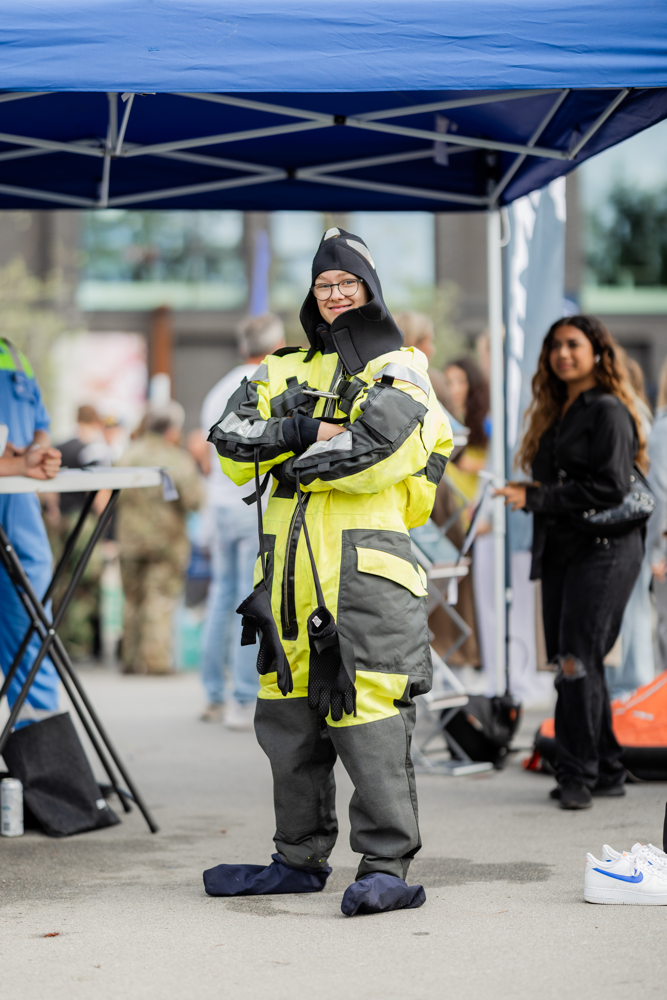
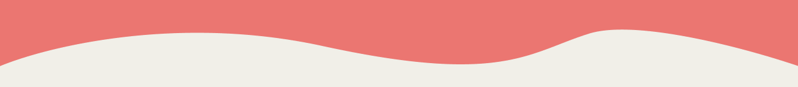
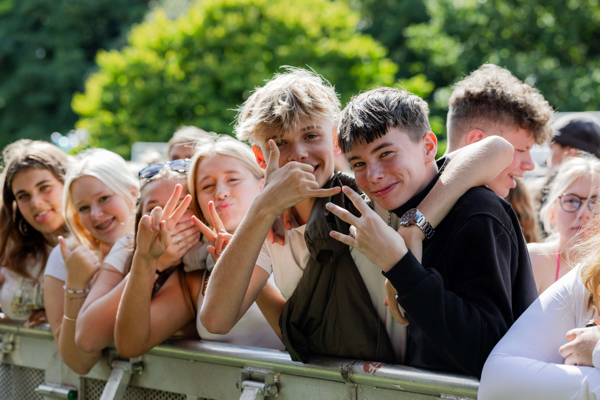
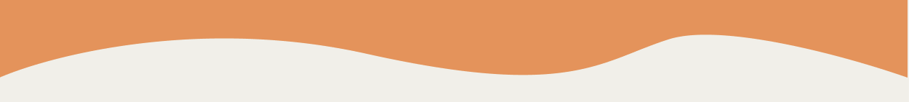
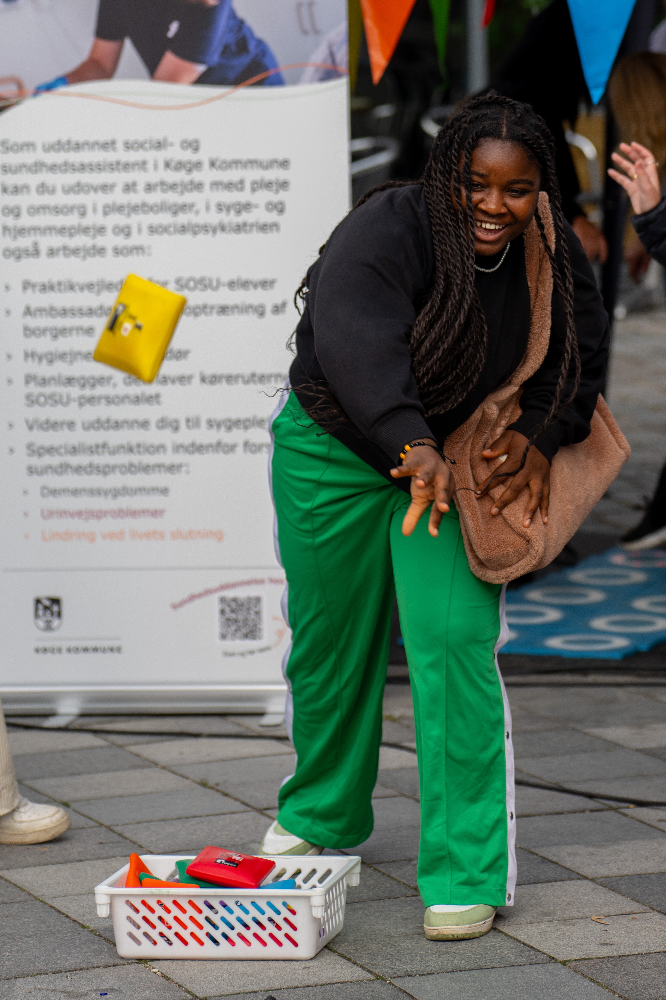
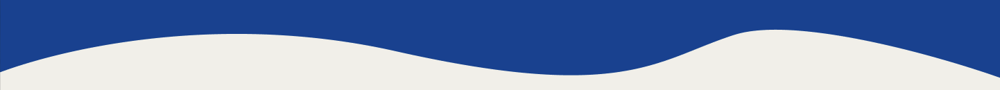

Ledige jobs

Sceneopsætning

Hjælp til med Sceneopsætning
SE JOB

Musikalsk indslag

frivillig til musikalske indslag på Campus+
SE JOB
Madlavning
Hjælp til med maden på Campus+
SE JOB

Frivillig medhjælper

Bliv frivillig medhjælper på Campus+
SE JOB